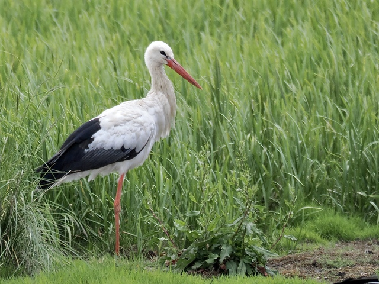
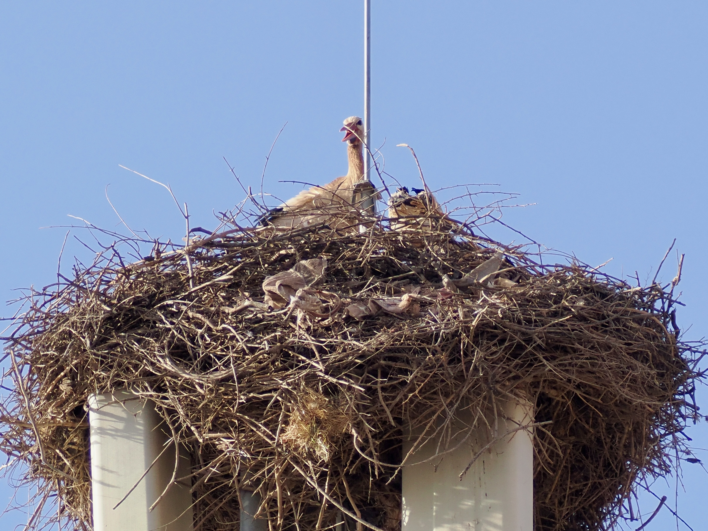

White Stork
Ciconia ciconia
Order: Ciconiiformes
Family: Ciconiidae

Elegant white bird with black wings. Legs and conical bill are red. Reintroduction progammes have taken place to re-establish breeding populations in the UK. Sometimes tracking down a target bird is no easy feat. I took advice from some other birders that these ones have been spotted in a closed farm, and I went through a narrow footpath with brambles and mud and finally hopped over a fence to get there.

Nests on high places, such as this mosque. There is a myth that storks bring babies, but in reality they can eject weaker chicks if food becomes limited!